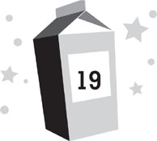

Lunar day 217
Late afternoon
My parents went back out onto the surface again. So did most of the other adults. Once Dr. Kim mapped out the possible locations that Nina might have gone to find armalcolite, they decided to fan out to hit all of them as quickly as possible. Daphne’s robots moved much slower than humans could, and we were running out of time. I think everyone suspected this might be a wild-goose chase, but they all still felt like they had to do something, and searching the base for the three-hundredth time wasn’t particularly useful. Nina obviously wasn’t there, so she had to be somewhere out on the surface.
This time, Chang was the only adult who stayed behind. Chang was annoyed by this, but even he realized that he needed to be around to make sure the Sjobergs didn’t revolt again. “Now that you’ve provoked them,” Mom had warned, “who knows what they’ll do if we’re all gone?”
“Probably eat our entire stash of chocolate bars,” Dad suggested.
I was really worried about everyone going back out, but my parents did their best to reassure me that their helmets were now in perfect shape. Plus, NASA had pinpointed the location of the cloud of space junk that had rained down before and assured us it was too far away to be a problem again. So I had no choice but to let my folks go and hope for the best.
I spent the first few minutes with Chang in the control room, keeping tabs on my parents, but this turned out to be more nerve-racking than I’d expected. Their progress in the rover was agonizingly slow and I kept imagining incoming showers of space junk. Meanwhile, Chang had his hands full talking to the Johnson Space Center, asking them to look into the Sjobergs’ connection to Maximum Adventure, updating them on the search for Nina, and listing what the rain of space junk had ruined so that repairs could be initiated. So I returned to my family’s residence, looking for a quiet place to think.
Instead I found Zan.
She appeared to me the moment I walked through the door.
“Hey!” I said, locking it behind me. “Thanks for helping me out with Patton today.”
Zan frowned. “I’ll never be able to do something like that again.”
“I don’t think you’ll have to. Patton’s still terrified. I convinced him I can summon that snake thing whenever I want.”
I’d been hoping Zan might find this amusing, but she seemed saddened by it instead. “My behavior in that instance was wrong.”
“No, his behavior was wrong,” I pointed out. “He was trying to beat me up! You saved me!”
“Even so, it violated so many rules. . . . Many of my fellow beings were not pleased.”
“How did they even know you did it?” I asked. “Can they see us?”
“It’s difficult to explain. But . . . there were some on my planet who felt I shouldn’t be allowed to come back.”
“No!” I exclaimed.
Zan smiled, seeming touched by my response. “They didn’t prevail, obviously. I’m here. But I must be very careful from now on. I take it from your mental state that this has been a very difficult day.”
“I’ll say. Kira and I almost died in a meteoroid shower.”
Now it was Zan’s turn to look worried. “You went out on the surface again?”
“It was an emergency.” I filled Zan in quickly on what had happened.
She listened intently to my whole story, then asked, “So everyone has gone back onto the surface to look for Nina once more?”
“Yes. They didn’t get to finish the search before, with the helmets being damaged and all. . . .”
“Even so, given what I know about your species, it seems as though it would be dangerous for Nina to range very far from the base.”
“It is, but she’s obviously not close by.”
“That may not be the case.”
“Yes, it is. We’ve looked everywhere.”
“Perhaps not.”
“We have,” I snapped. “Unless she shrank herself—which isn’t possible—there’s nowhere else on this base she could be!”
“Please don’t get upset with me, Dashiell. I’m only trying to help.”
“Well, you’re not doing a very good job of it.”
Zan didn’t say anything for a while. Then she asked, “Why are you upset with me?”
I turned away from her, annoyed at myself for how I’d spoken to her. “I’m not. I’m upset with everything else. Nina and the Sjobergs and nearly dying because of some stupid space junk . . .”
“No, Dashiell, you’re also upset with me. Remember, I’m connected to your mind. I can sense your emotions.”
I realized she was right. It was disconcerting to be talking to someone who could figure out what I was feeling better than I could myself. “I guess I’m just frustrated.”
“Why?”
“Because you’re from this super-advanced alien race and you can’t even help me. You can beam your thoughts all the way across the galaxy but you can’t figure out where Nina is? You can read my emotions but you can’t warn me that satellite debris is about to rain down on the moon?”
“I can’t predict the future.”
“Well, what can you do? Because all you ever seem to do is ask me questions! You don’t tell me about you, or your planet, or what kind of danger humans are in. . . .”
“I never said humanity was in danger.”
“But we are, aren’t we? That’s the whole point of this, right?”
Zan hesitated, trying to figure out how to respond. “Not exactly.”
“What’s going to happen?” I demanded. “Is there a giant asteroid heading toward earth? Is the sun about to explode? Are we all going to blow ourselves up?”
“None of those things are going to happen,” Zan said, so calmly that it was maddening.
“Then what is?!” I shouted. “You tell me it’s incredibly important that we stay in contact, but you won’t tell me why—and then you wonder why I’m frustrated with you? Do you have any idea what this is like?”
Zan locked eyes with me, and for a moment, it was almost as though I could feel her inside my head. “It appears to be very stressful for you,” Zan said. “More than I realized. I am sorry, Dashiell. I wish I could be more help where Nina is concerned, but I’m not that powerful. However, you are correct that I need to be more open with you. And I will be.”
“Starting when?”
Zan considered this thoughtfully. “Soon.”
“How soon?”
“Who are you talking to?” Violet asked.
I spun around to find my sister poking her head out of her sleep pod behind me.
I mentally cursed myself for being careless. I hadn’t checked the sleep pods to see if I was alone in the room when I’d come in—and in my frustration, I’d forgotten not to speak out loud during my conversation with Zan.
Zan seemed equally startled. Her blue eyes grew wide with concern.
“I’m not talking to anyone,” I said quickly. “Just myself.”
“Liar, liar, pants on fire,” Violet taunted.
“I should go,” Zan told me.
“Wait!” I told her. I was so flustered, I spoke out loud once more.
“There!” Violet cried. “You did it again!”
“I won’t be gone long this time,” Zan said. “I promise. But right now I’m a complication you don’t need.”
With that, she vanished.
I turned my full attention to Violet, feeling even more frustrated now. She was climbing out of her sleep pod. Her hair looked like she’d been asleep for a while; it was tousled like cotton candy. But she seemed too chipper to have woken up only a minute or two before. I wondered how much of my conversation she’d heard.
She looked around the room, searching for whoever I’d been talking to. “Where are they?” she asked.
“What were you doing in here?” I shot back, trying to change the subject.
“Hiding from you. You were mean to me before, so I came in here because I didn’t want anyone to find me. But then I fell asleep. And then you came in and woke me up with your shouting.” Violet picked up an InflatiCube and looked under it, as if maybe I’d been talking to a very tiny person who could hide under it. Or a hyperintelligent insect. “Where’d they go?”
“How long were you listening to me after you woke up?” I asked.
“I don’t know,” Violet replied. “I can’t tell time. And besides, I don’t even have a watch.”
“Well, guess.”
Violet screwed up her face in thought. “Four hours.”
“You’re right,” I sighed. “You can’t tell time.”
Violet stared at me thoughtfully. “Do you have an imaginary friend?”
My gut reaction was to deny this, because it was dumb for a twelve-year-old to have an imaginary friend. But then I realized I didn’t have a better explanation. “Yes. I do. I was just talking to her.”
“What’s her name?”
“Zan Perfonic.”
Violet snorted with laughter. “That’s silly.”
I shrugged. “That’s her name.”
“Not her name! It’s silly that you have an imaginary friend! You’re twelve!”
“There aren’t that many other kids here to hang out with.”
“It’s still silly. Having imaginary friends is weird.”
“You have an imaginary friend!” I exclaimed.
Violet looked at me curiously. “No, I don’t.”
“Yes, you do. You were talking about her this morning!” I tried to remember the name. “DooDah? The talking manatee?”
“DeeDah,” Violet corrected, like I was the crazy one. “She’s a space walrus. And she’s not imaginary.”
I rolled my eyes. “You think there’s really a space walrus living in the women’s bathroom here?” I turned toward the door, done with this conversation. “And you say I’m silly. . . .”
“I don’t really know what she is,” Violet told me. “I haven’t seen her. But I heard her and she sounds like a walrus.”
I stopped by the door and spun around to face Violet again. “What do you mean, you heard her?”
“I was in the bathroom and I heard a walrus.”
“When?”
“This morning. I got up early because I had to poop and when I was in the bathroom I heard her.”
“Have you ever heard DeeDah before?”
“Nope. This was the first time.”
I had a sudden flash of inspiration. Some things that had baffled me all day were starting to make sense. I grabbed Violet’s hand and led her out the door. “What did she sound like?”
“I told you! A walrus! Where are we going?”
“To the bathroom.”
“Why? Do you have to poop?”
“I want you to show me where you were when you heard DeeDah.”
“You can’t go into the girls’ room! You’re a boy!”
I led Violet down the staircase into the staging area. “Violet, I need you to think about this. Tell me exactly what you heard in the bathroom. Can you make the noise the walrus did?”
“I think so. It kind of went like this.” Violet lowered her voice as low as she could and bellowed, “Mmmmmeeeelllllllppppp.”
We were passing the control room. Chang was at the computer, keeping tabs on everyone outside. He laughed at Violet’s noise and said, “What are you up to now?”
“Dash wants to go into the girls’ room to talk to DeeDah!” Violet exclaimed.
Chang laughed again, not taking her seriously.
It occurred to me that this was everyone’s standard reaction to things Violet said.
I shoved through the door into the girls’ bathroom and led Violet inside. I probably should have sent Violet inside first to see if anyone was using it, but I was too distracted. “Was that the only noise you heard DeeDah make?” I asked.
“No,” Violet said.
“Hey!” a voice shouted from one of the toilet stalls. Just my luck, it was Lily Sjoberg. “Boys aren’t allowed in here!”
“That’s what I told him!” Violet reported,
“It’s an emergency,” I explained.
“Then use the men’s room!” Lily shouted. “I don’t want you stinking everything up in here!”
“Calm down,” I told her. “It’s not that kind of emergency.” Then I looked at Violet and asked, “What else did DeeDah do?”
“Well, she made the noise a lot. Mmmmeeeeeellllllpppppp. Mmmmmeeeeelllllppppp. And so I said, ‘Who is this?’ and she said, ‘DeeDah.’ ”
“This doesn’t sound like an emergency!” Lily shouted from the stall. “Get out of the girls’ room, you pervert!”
“Can you just give me one minute?” I asked. “It’s important.”
“No!” Lily shouted back. “I don’t want you lurking around in here listening to me on the toilet.”
“Lily,” I said, “believe me, the last thing in the world I want to do is to listen to you on the toilet.”
“Me too,” Violet agreed. “You toot like an elephant.”
“That does it!” Lily announced. “If you don’t get out of here right now, I’m going to scream!”
I lost it. I could have stepped out of the bathroom and let Lily have her peace, but it was an emergency. I was doing something important, and I’d had it with the Sjobergs bullying everyone on the moon base every chance they got. “No,” I warned. “You’re going to keep your mouth shut. If you so much as make another peep in there, I’m going to take one of the suction hoses from that toilet and cram it onto your face so hard that it sucks your brain out through your nose!”
To my surprise, I sounded pretty scary. Maybe it was because we were in the bathroom and my voice was echoing a lot. Maybe it was because I was so angry, I really was scary.
When Lily spoke again, she sounded pretty frightened. “You wouldn’t.”
“Don’t test me,” I growled. “It wouldn’t be that hard. Your brain isn’t that big. So just shut up for one minute and I’ll be out of here.”
“Okay,” Lily said meekly.
I returned my attention to Violet once again. She was smiling at me. “Wow,” she said. “You’re tough.”
“Where did the voice you heard come from?” I asked her.
“From the toilet,” Violet said.
“Really?” I asked. “Think hard.”
Violet did. She made a show of it, scrunching up her face. “It was the toilet,” she said definitively.
“Show me,” I said.
Violet entered the second stall and sat on the toilet there. “I was actually on that toilet,” she informed me, pointing to the first one, “but we can’t use it because Lily’s pooping there.”
Lily make a weak sigh in response.
“But I was sitting like this when I heard the noise, and it came from right down there.” Violet pointed into the toilet bowl.
I looked at her finger, jabbing downward. “You’re sure? Could it have maybe come from under the toilet?”
Violet scrunched up her face again. “Maybe.”
“Like, from under the floor?”
“I guess.”
I knelt before Violet, looking right into her eyes. “Is it possible that you might not have heard this walrus perfectly? Because she was under the floor. Do you think that maybe instead of saying ‘DeeDah,’ she said ‘Nina’?”
Violet’s mouth dropped open in understanding, which was all the answer I needed. Then she grew defensive. “It sounded like ‘DeeDah’! And it was really hard to hear her!”
“It’s okay,” I said. “You’re not in trouble. In fact, you may have saved the day.”
Violet brightened in excitement. “Really? I’m a hero?”
“You’re a hero,” I agreed. “It’s the rest of us who screwed up.” I led her back out of the stall, racing out the door. “Thanks, Lily. We’re done.”
“You can go back to pooping now!” Violet informed her.
I dragged Violet right across the hall and into the control room and told Chang, “I think I know where Nina is.”